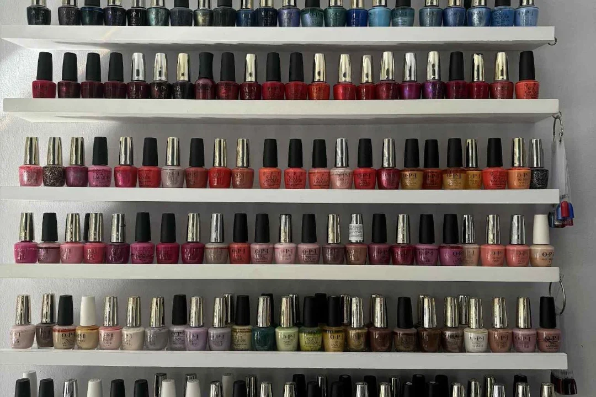
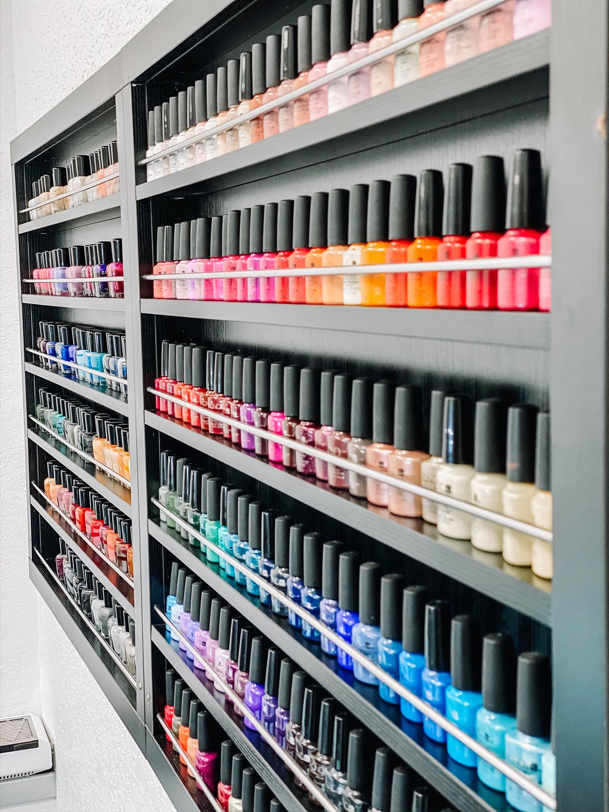
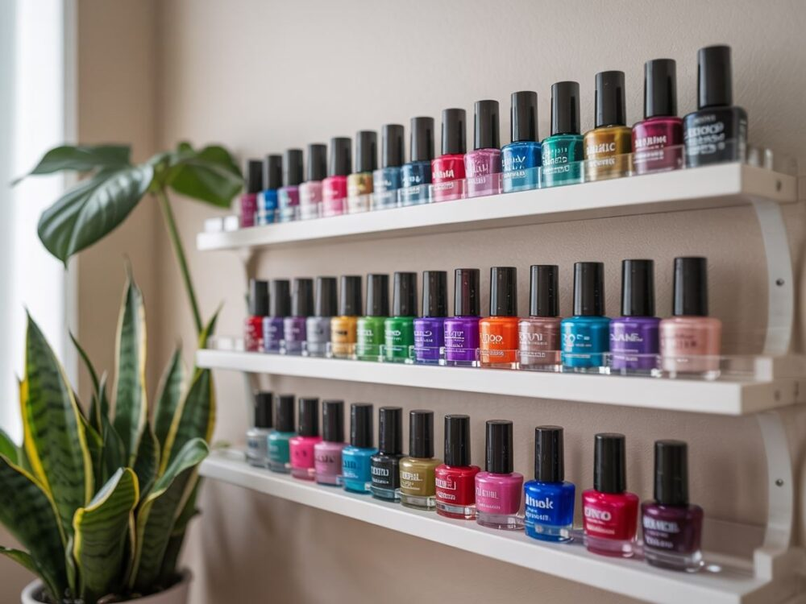

Five fungal toenail myths, checked
Myth 1: A bleach soak will fix it
No, and it can burn skin. Skip it entirely.

Myth 2: It will clear up on its own
Affected nails rarely improve without sustained attention, and nails grow slowly, so any real change is measured in months.
Myth 3: Polish hides it, so it is handled
Polish hides colour, not condition, and trapping moisture under polish can make the environment friendlier for fungus. Bare, dry and monitored beats covered.

Myth 4: Only athletes get it
Anyone whose feet spend long hours warm and damp is a candidate: nurses, kitchen staff, construction crews, dancers, and half of South Florida in August.
Myth 5: One treatment cures it
There is no honest one-visit cure to sell you, which is why KuuStore sells careful cosmetic care and aftercare instead: cleaner, better-shaped nails and a routine that gives healthy growth its best chance. Anyone who promises you a cure in a single session is selling you the myth.
